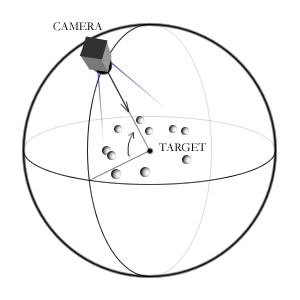
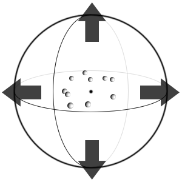
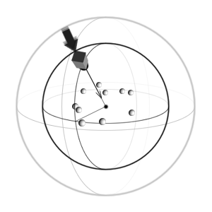

|
|
ParticleVis is an OpenGL visualization system designed to load and display particle simulation data. It is purely a visualization tool, completely distinct from any simulation engine that may be used to generate particle data. By loading in a file of particle state, the entire dataset can be visualized and explored in a fully realized three dimensional environment.
Notable features of ParticleVis include:
The data sources from which ParticleVis constructs visualizations are a series of simple file formats. The fundamental data source is that of particle trajectories: a set of discrete objects with physical positions that are specified over time.
The “statefiles” that contain these fundamental trajectories must contain, at the minimum, blocks of particle positions. In addition to position, the orientation of each particle and two vectors are acquired. This pair of vectors describes the translational and angular velocities, in that order.
Since state files do not contain any description of the particle shape or appearance, an additional file that contains a geometric description of each particle is used to generate a more accurate visualization. These particle descriptors contain XML-based markup that concisely specifies particle appearance. An XML descriptor is paired with a single statefile or set of similar statefiles. At runtime, an XML descriptor can be loaded at any time onto the currently loaded particles.
Other sources of data may also be integrated into the particle visualization. The user may generate and load color map files, which specify arbitrary coloring of particles. In the case of spherical paricles, surface map files allow specification of scalar quantities on the surface of each particle. Free-form vector fields may also be placed into the visualization via the vector file format. More detail about each of these datasources and the file formats associated with them is provided in subsequent sections.
Minimal operation of the visualization application is accomplished by simply loading a statefile and using ParticleVis to play back and explore the data. More accurate and visually pleasing visualization can be obtained by loading an appropriate XML descriptor. Additional data sources may then be added and integrated by parsing in additional filetypes. In the ParticleVis application, the “File” menu contains all data acquisition commands.
Each file menu “open” or “load” entry corresponds to a filetype supported by ParticleVis. Loading a statefile or XML descriptor will launch a file thread that will parse the input file in the background, allowing exploration of the partial dataset during loading. To terminate the existing file loader threads, choose “Terminate All File Processes” from the file menu or press the comma key. Color maps can also be loaded (with persisting and non-persisting color assignment). For proper functionality, color maps should be imported only after the statefile has been fully loaded. A command to load a bitmap texture image for use with polygonal particle rendering (“Use Textures” under the View menu) is also present. More detail about the various file formats and their syntax can be found in the file format guide.
Several miscellaneous commands reside in the file menu. The first is “Generate Benchmark Frame.” This command will generate a single frame of particle state, with random positions. The translational velocity will be set to the same value as the random position. This feature is useful for testing features or evaluating the performance of the system. Another file menu command is “Report currently loaded data,” which will briefly describe the currently loaded state and vector data. The final miscellaneous command is “Set all to Spheres,” which will force all loaded particles to have a spherical geometry of specified radius. The command can be convenient when the loaded data is simple and no descriptor is readily available.
The viewpoint in PVis is controlled primarily by mouse input. The user can rotate and translate the camera relative to the scene. The camera is set up in an orbiting configuration. The camera position orbits in a spherical radius around a target centerpoint, and dragging the mouse allows you to manipulate the orientation and position of the sphere. Figure 1 portrays how mouse input transforms the camera. Each type of input is described in the list that follows.
  
|
Once data is loaded, the control dialog (shown in Figure 2) is the primary interface to allow a user to easily navigate and playback the entire range of loaded frames. Along the bottom of the control are five VCR-style playback buttons that enable the user to start and stop the simulation, skip frames one-by-one, and jump to the beginning or end of the simulation. The Position slider reflects the current frame of the simulation relative to total frames loaded. By dragging the slider you can skip rapidly to a specific point in the simulation. The Maximum Speed slider allows the user to control the rate at which frames are rendered during simulation playback. If the rendering speed is faster than you wish, you can drag the speed slider to the appropriate frames per second setting and the rendering of frames will be restricted to that speed.
Checking Reverse Play will cause the simulation to play back in reverse, decrementing the frame counter instead of increasing it. With Repeat Play enabled the simulation will automatically rewind itself and loop back to the beginning (or end) of the loaded frameset.
The “mark particle” command prompts the user to select a particle to be marked in the same manner as the Edit → Mark Particle command. Marked particles are highlighted and their paths over time are drawn. The “save frame” command will cause the current rendered frame of the simulation to be saved to a png or avi file.
ParticleVis supports a number of keyboard commands for efficient control of the viewpoint and renderer. Table 1 lists the supported keyboard shortcuts. Most menus in ParticleVis can also be quickly driven using keystrokes.
Some of the keyboard commands vary slightly from their menu counterparts. The function keys, in particular, will align the camera to the chosen axis, but unlike the View menu command, will not recenter the view onto the origin. The arrow and plus/minus keys function in a continous manner, and will spin or dolly the camera as long as they are held down.
| |||||||||||||||||||||||||||||||||||||||||||||||||||||||||||||||||||||||||||||||||||||||||||||||||||||||||||||||||||||||||||||||||||||||||||||
A wide variety of methods are available for use in visualizing particle data. The choice of data to visualize, which elements to emphasize, and the balance between visual fidelity and performance are configurable elements of the visualization. The primary elements that ParticleVis can visualize are the particles themselves and various forms of vector information.
Particle rendering is usually performed using polygonal approximations of geometry described in an XML descriptor file. Several levels of quality for the generated geometry are available for selection. Per-vertex lighting and user-loaded textures can optionally be applied to the surface of rendered polygonal particles. The set of particles can be rendered in a transparent fashion to give a better view of the entire volume of particles. When spheres comprise much of the particle data, specialized GLSL shaders that quickly draw pixel-accurate spheres are available. These high performance shaders are only available if newer (OpenGL 2.0 support) hardware and drivers are present. Texturing is not currently available when using sphere shaders, but lighting models are applied on a per-pixel basis, allowing high fidelity visualization at any scale. Finally, a point rendering mode allows for minimal rendering of each particle (as a fixed-size square of pixels). Using points allows for high rendering performance at the cost of visual fidelity.
A number of vector data sources may also be rendered within ParticleVis. Data attached to the particles themselves in the form of translational and rotational velocity vectors and normal vectors can be chosen for rendering. Each type of rendered vector is represented by a line and arrowhead, where each arrowhead is unique to the type of vector rendered. Data from vector files can also be rendered into the scene.
Parameters for many of the scene rendering and visualization functions are found in the “Scene Options” dialog, which is found under the Edit menu (shown in Figure 3). Numerical options for the camera, vector rendering, lighting, and other miscellaneous options are found in the scene dialog.
In ParticleVis, the “View” menu contains most of the options that control the renderer.
The use of sphere shaders (enabled under the “View” menu or pressing ‘6’ ) merits additional discussion. The sphere shader types available represent a set of shading programs, written in the GLSL language, that efficiently render pixel-accurate spheres. The different styles of shaders allow the use of various lighting options, image space outlines, rendering styles, and velocity information.
The first two shader types are labled “Phong Shading” and “Phong + Outlines.” These shading styles are both named for their use of the Blinn-Phong shading model. This lighting model, which is also used by OpenGL for lighting polygonal models, is used for pixel-accurate lighting, including specular highlights, on the spheres. Normally only the first light is used for specular reflections (for efficiency), but when the highest quality (“ultra”) is used and the first phong shader is selected, both lights will contribute a specular term. The primary difference between the two programs is that the outline shader will add a one-pixel black outline to each rendered sphere. This outline can be useful for distinguishing densely arrayed particles.
The “Basic Shading” shader type is a higher performance shader that uses only one light. Only the diffuse term of the lighting model is used, and no highlights are calculated. To further increase performance, the depth correction on the spheres has been approximated. This may lead to the appearance of incorrect intersections between overlapping spheres, but this shader is the fastest type that still retains per-pixel lighting.
The “Cartoon” shader type uses a cel-style lighting approach and thick (two pixel) outlines to give a stylized appearance to rendered spheres. Only the first light is used, and the specular term is included. As with the “Phong + Outlines” style, the outline size is based on screen-space pixels.
The “Radial Sprite” shader type is one of the fastest ways to render particles. Only the outline of the sphere is calculated, and no lighting is used. When lighting is enabled in the renderer, the distance from the center of the particle is used to attenuate the particle color. This particle style can be effective when used with the “Additive Alpha Blending” transparency option. When lighting is disabled, a uniformly colored disk is generated. This shader type is intended for use when high rendering performance or clarity of particle coloring is important.
The “Perspective-Correct” shader type employs a per-pixel intersection test that works with complete accuracy when using perspective projections. For performance reasons, the other shader types assume that a orthogonal (parallel) projection is being used by the camera, and project the silhouette of the sphere as a circle. In the case of a perspective projection, the actual projected silhouette is in fact an ellipse. This difference is not generally a critical one, especially with a lower projection angle, as the geometric distortion is usually quite low. If so desired, though, this shader type allows the exact geometric projection to be used in the shader, albeit at a somewhat high performance cost. In other respects this shader resembles the “Basic Shading” type.
The remaining shading types employ translational velocity information from each particle. These shaders are designed to function under an orthogonal projection. The “Velocity Glyph” shader will use the translational velocity vector of the particle to render an arrow glyph that points in the screen-space direction of the particle’s motion. This glyph is inscribed onto the surface of the sphere, and does not take the vector magnitude into account. The resulting effect is similar to a hedgehog-style vector plot. Enabling color mapping can help to elucidate the magnitude of the vectors.
To incorporate the effect of vector magnitude directly into the arrow glyph, the “Velocity Glyph (Scaled)” shader style can also be used. This shader type uses the translational velocity vector length parameter (set in the “Scene Options” dialog) to scale the thickness of the glyph according to its magnitude. By setting the vector length to an appropriate ratio, a suitable range of thicknesses can be achieved. The vector length scaler (see 3.5) is a good tool for accomplishing this.
The “Velocity Motion Blur” shader style uses the translational velocity to create a camera motion blur effect on moving particles. This shader blurs the particles in the screen-space direction of their translational velocity vector, by a factor calculated from the translational velocity length parameter and the vector magnitude (as in the previous shader type). This effect has a high performance cost, but can be useful for presentational purposes. To accomplish proper composition, Z-sorted alpha blending is used when this shader type is enabled.
ParticleVis provides the ability to render static volumetric data into the visualization. By loading a volume file with the corresponding command under the “Analysis” menu, a file of raw volume data can be rendered. To enable and disable the use of the loaded volume data, use the “Enable Volumetric Rendering” command under the “Analysis” menu.
The rendering of volume data can be adjusted by choosing the “Volumetric Rendering Options” command under “Analysis.” If no volume data is currently loaded, choosing “Use Dummy Data” will generate a spherical volume for testing purposes. Each X-Y slice can be normalized individually, for both coloring and alpha intensity, as opposed to globally by checking the appropriate option. The volume slices will use alpha-based blending by default, but an additive blending mode can also be enabled. Each time the volume rendering options dialog is used, the current gradient will be re-applied to the loaded volume data, updating the volume’s coloring.
The “Max Alpha” of the volume determines the transparency range the slices are mapped to, from zero to 255. Raising or lowering it will change the overall transparency of the volume. “Slice size” is the measure of the width of the set of slices, and should be set to match the volume’s scale, so that no clipping occurs during rendering. The number of slices is the total number of generated slices. Increasing the slice count will result in a higher fidelity rendering, but will also increase load in terms of graphical fill rate.
The volume can be transformed using the origin, rotation, and scale fields in the options dialog. The origin is the centerpoint of the volume in world coordinates. The rotation fields describe a series of rotations in degrees, in order X-Y-Z, which can reorient the volume as needed. The scale fields allow rescaling of the volume in each axial direction. The volume will first be scaled, then rotated, and then translated.
The analysis menu also contains a “Create Density Volume” command that can generate a simple spatial view of average density based on the loaded particle state data. Once the state data is loaded, this command can be executed by inputting a resolution for the cubic size of the volume. A large resolution will produce cubic cells of small size, and vice versa. The loaded state data will then be traversed and the presence of particles in each spatial cell will be compiled and averaged over all frames. For each frame, every particle that is present in a cell will increment the cell’s density measure by one. The current gradient is then used to color each cell based on its normalized density.
Several other functions within ParticleVis allow configuration of rendering and visualization: the gradient editor, the positioning tool, and the vector length scaling tool.
The gradient editor displays the current ramp of color that is used for certain coloring schemes for both particles and vectorlines. The gradient is specified by a series of color knots. Color is linearly interpolated between the knots to produce a smooth ramp. Changing the gradient is accomplished entirely with mouse input. Clicking and dragging a knot updates its position. New knots with the current color can be added, and existing knots can be deleted. The “number of generated colors” field controls the fidelity of the generated gradient: if only a small number of discrete colors is desired, set this field to a low value. Gradients can be also be saved and loaded to and from files.
The positioning tool is found under Edit → Position Camera/Lights. This tool allows mouse-based positioning of light sources and the camera. To point the camera into a specific position, select the modal toggle to place a camera position and target into the scene, then press the “Force Camera Position” button. The viewpoint will be locked into this position until the escape key is pressed or the option is disabled under “Scene Options.” A camera cone showing the range of the potential viewpoint can be drawn during this process. Selecting the light toggles allows you to move the lights around the scene interactively. Depending on the lighting options, the rendered position may be the light’s direction or point position. Pressing escape will exit this positioning mode as well.
The vector length scaler, found under the “View” menu, allows interactive adjustment of vector glyph length. Each vectorline type can be scaled by dragging or clicking its corresponding scaler bar. The scale values are exactly as they are found in the “Scene Options” dialog. When you have finished scaling, press escape or close the tool to return to normal input.
A series of tools are provided in ParticleVis that are useful for simple analysis. The ability to mark particles by mouse selection, region, or ID is provided. Each marked particle is given a highlighted color in the visualization, a pathline of configurable length, and a line of text in the console that reports current position and velocity. More advanced marking operations are provided in the visibility selection tool. A facility for bounding or clipping out spatial regions is also provided. It is also possible to generate windowed graphs that display individual particle state information over time.
The aim of all these features is to allow more specific queries into the loaded data. However, there are few features inside ParticleVis proper that are able to generate derived data from the particle states. Instead, file formats such as color and surface maps exist to allow arbitrarily generated data to be loaded onto the visualized particles. Subgraphs of scalar value per time step (comma separated value files) can also be loaded and displayed in subwindows. If the existing coloring options are insufficient, color maps allow the loading of color information for any or all of the particles at each timestep. Surface maps allow even more control, as they specify an array of scalars that are mapped onto each rendered particle. The vector file format can also be used to overlay additional data onto the loaded state, and volume files can be used to provide additional (static) spatial data.
Each particle in the visualization possesses a marking state that indicates if the particle should be highlighted and tracked. Particles may also be hidden, or flagged to indicate that they should not be drawn transparently. Marking can be done using the mouse, ID input, or options in XML files. The edit menu contains the marking commands: “Mark particles for Tracking” (‘p’ key), ”Mark particle to hide” (‘h’ key), and “Mark particle to follow” use mouse input. Following a particle will lock the camera target to the position of the marked particle until the command is repeated or escape is pressed. “Mark particle by ID” (‘i’ key) uses a numerical ID that corresponds to the ordering of particles in the statefile, starting from zero. The “Unmark all Particles” or the ‘u’ key will clear all marking states.
More complex marking operations can be performed using the visibility selector, found under the edit menu. Most of the visibility functionality requires a graphics card that supports hardware occlusion queries. The visibility selector allows all currently visible particles or all particles within a selected region to be marked. Optionally, the inverse of the selection (hidden particles) can be used by selecting the “Select Occluded Particles” radio button. The marking action that is applied is determined by the selection of checkboxes in the selector dialog. Pressing period or “Select Entire View” will use the entire rendered viewpoint for selection, while pressing semicolon or “Select Region” allows a rectangular area to be drawn out for selection. The “Invert Marking” command (forward slash) will invert the mark state of all particles: currently unmarked particles will be marked, and currently marked particles will be unmarked. When all particles are unselected this can be used to quickly mark the whole set. “Reset States” will clear all marking information from particles.
The bounding options in ParticleVis allow you to restrict particle rendering to a certain spatial range. Opening the bounds dialog under the edit menu allows the configuration of a range of allowed X, Y, or Z positions. Enabling one or more of the checks will engage the range check. This can also be thought of as a series of axis aligned clipping planes.
When transparency is enabled, you can render both bounded and unbounded particles by selectively applying transparency to particles outside the range instead of hiding them. The “draw bounded particles under transparency” option controls this feature.